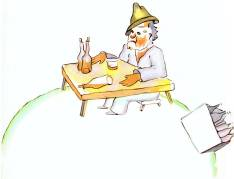

La planète suivante était habitée par un buveur. Cette visite fut très courte, mais elle plongea le petit prince dans une grande mélancolie :

– Que fais-tu là ? dit-il au buveur, qu’il trouva installé en silence devant une collection de bouteilles vides et une collection de bouteilles pleines.
– Je bois, répondit le buveur, d’un air lugubre.
– Pourquoi bois-tu ? lui demanda le petit prince.
– Pour oublier, répondit le buveur.
– Pour oublier quoi ? s’enquit le petit prince qui déjà le plaignait.
– Pour oublier que j’ai honte, avoua le buveur en baissant la tête.
– Honte de quoi ? s’informa le petit prince qui désirait le secourir.
– Honte de boire ! acheva le buveur qui s’enferma définitivement dans le silence.
Et le petit prince s’en fut, perplexe.
« Les grandes personnes sont décidément très très bizarres », se disait-il en lui-même durant le voyage.